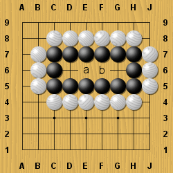

Съдържание
СъдържаниеВ момента Черния е напълно заобграден. Какъв е задължителния му ход?
Макар Черния да има три празни места в средата на групата си, те оформят само едно око (засега).
Ето защо трябва да ги разделите на две очи, играейки по средата.
Ако не играете там, Белия ще играе там и групата ще умре.
Поговорка в Го - Вашата жизненоважна точка е важна и за опонента ви.
В долната схема, къде според вас трябва да направите разделението?
Както виждате, ако имате твърде малка територия, ще имате неприятности.
Трябва винаги да се опитвате да направите територията си достатъчно голяма и да не позволявате да бъдете заобградени.
Какво ще кажете за този случай?
В този случай не се налага да разделяте територията си.
Ако Белия играе в a, отговорете му с ход в b.
Ако Белия опита b, отвърнете му с a.
Така винаги можете да имате две очи, независимо от атаката на Белия.
Ако игнорирате тази атака обаче, Белия може да заеме и двете точки a и b.
Тогава ще останете само с едно око и групата ще бъде мъртва.
 Следващ урок
Следващ урок Начало
Начало